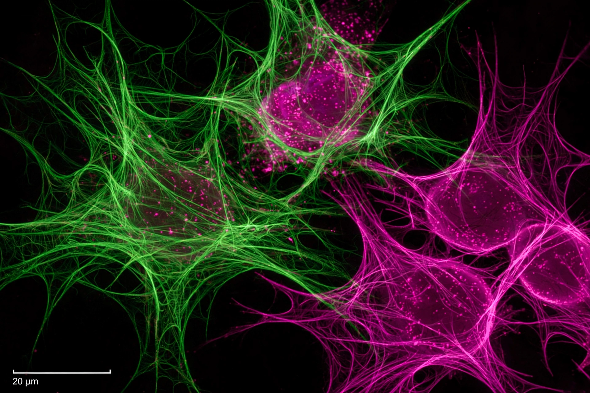

[Image: a false-colour microscopy image of cells glowing green and magenta — the journal's typical hero research image, as remembered]From protein-structure prediction to autonomous experiments, machine-learning tools are changing how researchers plan, run and publish experiments — and raising questions about authorship, reproducibility and training that journals and funders are scrambling to answer.
Genomes from archaeological remains reveal migrations thousands of years ago, building on the science summarised in DNA.
Opinion and comment from working scientists, in the journal founded in 1869 whose pages carried the discovery of the structure of DNA in 1953 and of the first exoplanets' signatures.
Audio coverage of research including astronomy results from NASA and ESA missions, and updates on black hole imaging.